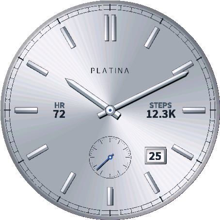
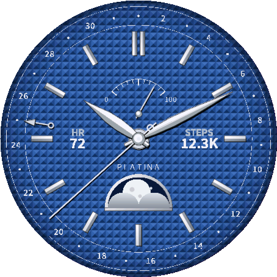
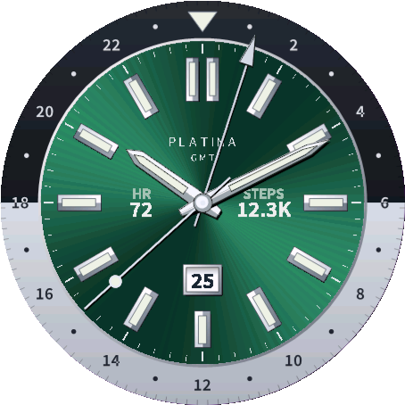
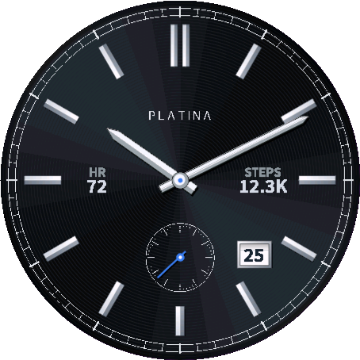
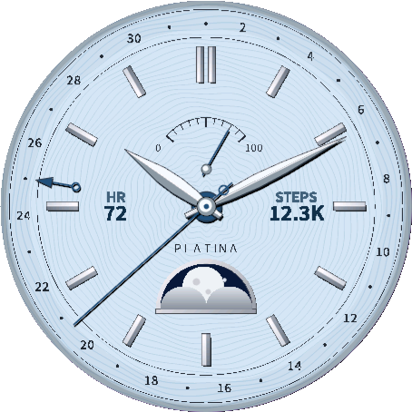
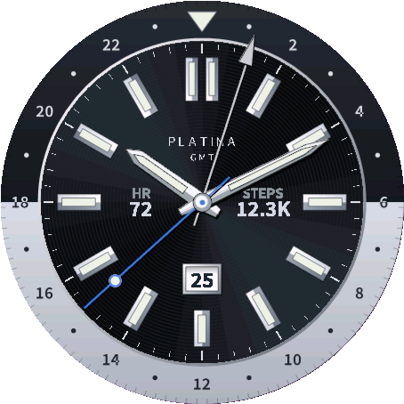

Platina｜铂金色指针与雕纹风表盘的Garmin高级腕表风表盘
Platina(铂金)是不使用金色、带有冷峻金属色调的高级指针表盘：铂金色的指针与立体刻度，搭配雕纹(guilloché)风格的彩色表盘。继金色的Aurum与珠宝风的Empress之后，这是佐藤雄一Garmin系列中第3款高级腕表风表盘。
简单来说，5种款式与3种布局(Dress・Moonphase・GMT)组合出15种样式，一次购买即可全部使用，并可随时在设置中切换。
适合什么样的人？
- 拥有支持机型的Garmin手表，想要银色、蓝色或绿色而不是金色表盘的人
- 喜欢带有月相或GMT指针的机械表风格表盘的人
- 希望根据场合切换布局的人，例如工作日用Dress、旅行时用GMT
- 希望在表盘上显示心率、步数等数据，又不破坏表盘外观的人
5种款式
| 款式 | 特点 |
|---|---|
| Platinum Silver | 银色太阳纹、蓝灰色印字、蓝钢风格秒针 |
| Sapphire Blue | 蓝色巴黎钉纹(金字塔格纹)、银白色印字 |
| Emerald Green | 绿色太阳纹、银白色印字 |
| Midnight Platinum | 黑色同心圆细纹(azurage)、银灰色印字、蓝色秒针 |
| Glacier | 浅冰蓝色波浪纹、海军蓝印字与点缀 |






※ 截图为模拟器(Venu 3)画面，数据项目的数值为示例。
3种布局
| 布局 | 配置 |
|---|---|
| Dress | 铁轨式分钟刻度、多面切割的棒状刻度与指针、6点位置小秒针、朝4点半方向的日期窗 |
| Moonphase | 6点位置月相、12点位置动力储存风格的手表电量表、外圈1至31日刻度的指针式日期、叶形指针 |
| GMT | 双色24小时圈(上为夜晚、下为白天)、夜光风格的刻度与剑形指针、6点位置日期窗、24小时GMT指针 |
关于月相与GMT指针
- 月相是在手表上根据平均朔望月(约29.53天)计算的近似值，可能与实际月相相差约一天。
- GMT指针显示UTC加上您设置的时差，以整数小时设置，范围-12至+14(默认0＝UTC)。不会跟随夏令时，需要时请自行调整时差。时差为半小时或45分钟的地区无法准确显示。
主要功能
| 功能 | 可以做什么 |
|---|---|
| 最多4项数据 | 可从心率・步数・卡路里・爬楼层数・距离(km)・身体能量指标(BB)・手表电量・通知数・关闭中选择。较大的步数与卡路里会缩写显示(例如12.3K) |
| 设置项目 | 款式(5种)、布局(3种)、秒针开／关、数据项目1〜4、GMT指针的UTC时差(小时) |
| 常亮显示 | 低功耗状态下只显示时针、分针与4个刻度的轮廓(不显示表盘图像与秒针)，轮廓每分钟移动几个像素，以降低烧屏的风险 |
| 语言 | 本表盘仅支持英文与日文，不支持中文。表盘上的标签为简短的英文缩写(HR、STEPS等) |
适配机型
支持49款圆形AMOLED屏幕的Garmin手表：Forerunner 70／165・165 Music／170・170 Music／265・265S／570（42・47mm）／965／970、Venu 2・2 Plus・2S／Venu 3・3S／Venu 4（41・45mm）、vívoactive 5・6、fēnix 8 AMOLED（43・47・51mm）／fēnix 8 Pro（47・51mm）／fēnix E／fēnix 9（43・47mm）／fēnix 9 Pro（43・47・51mm）、epix (Gen 2)／epix Pro (Gen 2)（42・47・51mm）、Instinct 3 AMOLED（45・50mm）、MARQ (Gen 2)、Approach S50／S70（42・47mm）／S72（43・47mm）、Descent G2／Mk3（43・51mm）、D2 Air X10／Mach 1／Mach 2／Mach 2 Pro（包括tactix 8、quatix 8等相同平台的机型）
其他机型和其他应用的适配情况，请见Garmin适配机型一览。
价格与购买方法
Platina是付费表盘。安装后48小时内可免费试用全部功能。试用结束后，一次性解锁购买(US$5.99・买断)即可继续使用全部功能，无订阅。
试用结束后，在购买之前，表盘会显示购买用的代码和网址www.kzl.io/code。请用手机或电脑打开该网址，输入代码并一次性支付US$5.99，表盘便会自动解锁(可能需要几分钟)。
付款并非由Garmin处理，而是由第三方服务「KiezelPay」处理。手表上的购买界面为英文。
常见问题
Q. Platina可以免费使用吗？
A. Platina是付费表盘(一次性购买)。安装后48小时内可免费试用全部功能。试用结束后，一次性支付US$5.99即可继续使用全部功能，无订阅。
Q. 在哪里付款？
A. 付款并非由Garmin官方处理，而是由第三方服务「KiezelPay」处理。试用结束后，表盘会显示购买用的代码和网址www.kzl.io/code。用手机或电脑打开该网址，输入代码并付款后，表盘便会自动解锁(可能需要几分钟)。手表上的购买界面为英文。
Q. 5种款式与3种布局需要额外购买吗？
A. 不需要。Platinum Silver・Sapphire Blue・Emerald Green・Midnight Platinum・Glacier共5种款式与Dress・Moonphase・GMT共3种布局组合出的15种样式，一次购买即可全部使用，并可随时在设置中切换。
Q. 支持哪些机型？
A. 支持49款圆形AMOLED屏幕的Garmin手表，主要包括Forerunner 165／265／570／965／970、Venu 2／3／4、vívoactive 5／6、fēnix 8／8 Pro／E／9、epix (Gen 2)・epix Pro、Instinct 3 AMOLED、MARQ (Gen 2)、Approach S50／S70／S72、Descent G2／Mk3、D2。完整机型列表请参阅“适配机型”部分。
Q. 月相与GMT指针有多准确？
A. 月相是在手表上根据平均朔望月(约29.53天)计算的近似值，可能与实际月相相差约一天。GMT指针显示UTC加上您设置的时差(以整数小时设置，范围-12至+14)。不会跟随夏令时，需要时请自行调整时差。时差为半小时或45分钟的地区无法准确显示。
Q. 常亮显示时会怎样？
A. 在低功耗状态(常亮显示)下，Platina只显示时针、分针与4个刻度的轮廓，不显示表盘图像与秒针。轮廓每分钟移动几个像素，以降低AMOLED屏幕烧屏的风险。